СП 429.1325800.2018 «Конструкции ограждающие с эффективным утеплителем и тонколи»
О документе: разработчики, утверждение, регистрация, ключевые слова
СВОД ПРАВИЛ
1 ИСПОЛНИТЕЛЬ - Акционерное общество «Научно-исследовательский центр «Строительство» (АО «НИЦ «Строительство») - Центральный научно-исследовательский институт строительных конструкций имени В. А. Кучеренко (ЦНИИСК им. В. А. Кучеренко)
2 ВНЕСЕН Техническим комитетом по стандартизации ТК 465 «Строительство
- 3 ПОДГОТОВЛЕН К УТВЕРЖДЕНИЮ Департаментом градостроительной деятельности и архитектуры Министерства строительства и жилищно-коммунального хозяйства Российской Федерации (Минстрой России)
- 4 УТВЕРЖДЕН приказом Министерства строительства и жилищно-коммунального хозяйства Российской Федерации от 25 декабря 2018 г. № 862/пр и введен в действие с 26 июня 2019 г.
- 5 ЗАРЕГИСТРИРОВАН Федеральным агентством по техническому регулированию и метрологии (Росстандарт)
6 ВВЕДЕН ВПЕРВЫЕ
В случае пересмотра ( замены ) или отмены настоящего свода правил соответствующее уведомление будет опубликовано в установленном порядке. Соответствующая информация, уведомление и тексты размещаются также в информационной системе общего пользования - на официальном сайте разработчика ( Минстрой России ) в сети Интернет
© Минстрой России, 2018
Настоящий нормативный документ не может быть полностью или частично воспроизведен, тиражирован и распространен в качестве официального издания без разрешения Минстроя России
Дата введения - 2019-06-26
УДК 691-419.3.04(083.96) ОКС 91.080.99
Ключевые слова: ограждающие конструкции, эффективные утеплители, тонколистовые облицовки, правила проектирования, расчет
ИСПОЛНИТЕЛЬ
АО «НИЦ «Строительство»
| Генеральный директор | _____________ | А.В. Кузьмин | |
|---|---|---|---|
| ЦНИИСК им. В.А. Кучеренко | |||
| Руководитель разработки | Директор | _____________ | И.И. Ведяков |
| Ответственный исполнитель | Заведующий лабораторией | _____________ | В.Е. Батрак |
| Исполнители: | Главный научный сотрудник | _____________ | В.М. Бобряшов |
| Ведущий научный сотрудник | _____________ | А.Ю. Глазунов | |
| Ведущий научный сотрудник | _____________ | В.В. Бобряшов |
Введение
Настоящий свод правил направлен на реализацию требований федеральных законов от 30 декабря 2009 г. № 384-ФЗ «Технический регламент о безопасности зданий и сооружений» [1] и от 27 декабря 2002 г. №184 ФЗ «О техническом регулировании» [2].
Свод правил выполнен авторским коллективом ЦНИИСК им. В. А. Кучеренко (д-р техн. наук, проф. И.И. Ведяков , канд. техн. наук В.Е. Батрак , д-р техн. наук В.М. Бобряшов , канд. техн. наук А.Ю. Глазунов , В.В. Бобряшов ).
Правила проектирования
Fencing constructions with effective insulation and cladding of thin sheets. Design rules
1Область применения
Настоящий свод правил распространяется на проектирование и расчет каркасных и двухслойных ограждающих конструкций с эффективным утеплителем производственных и общественных зданий. Ограждающие конструкции с утеплителем из фенольного пенопласта применяются только в производственных зданиях. При использовании конструкций с утеплителем из пенопласта температура поверхности металлических облицовок, обращенных внутрь помещений, не должна быть более 30 о С. Относительная влажность воздуха внутри помещений не должна быть более 70 %.
2Нормативные ссылки
В настоящем своде правил использованы нормативные ссылки на следующие документы:
ГОСТ 2228-81 Бумага мешочная. Технические условия
ГОСТ 4598-86 Плиты древесноволокнистые. Технические условия
ГОСТ 4640-2011 Вата минеральная. Технические условия
ГОСТ 9573-2012 Плиты из минеральной ваты на синтетическом связующем теплоизоляционные. Технические условия
ГОСТ 10499-95 Изделия теплоизоляционные из стеклянного штапельного волокна. Технические условия
ГОСТ 11539-2014 Фанера бакелизированная. Технические условия
ГОСТ 18124-2012 Листы хризотилцементные плоские. Технические условия
ГОСТ 20916-87 Плиты теплоизоляционные из пенопласта на основе резольных феноло-формальдегидных смол. Технические условия
ГОСТ 21631-76 Листы из алюминия и алюминиевых сплавов. Технические условия ГОСТ 21880-2011 Маты из минеральной ваты прошивные теплоизоляционные.
Технические условия
ГОСТ 27751-2014 Надежность строительных конструкций и оснований. Основные положения
ГОСТ 30547-97 Материалы рулонные кровельные и гидроизоляционные. Общие технические условия
ГОСТ 30673-2013 Профили поливинилхлоридные для оконных и дверных блоков. Технические условия
ГОСТ 34180-2017 Прокат стальной тонколистовой холоднокатаный и холоднокатаный горячеоцинкованный с полимерным покрытием с непрерывных линий. Технические условия
ГОСТ 32805-2014 Материалы гибкие рулонные кровельные битумосодержащие. Общие технические условия
ГОСТ 33344-2015 Профили пултрузионные конструкционные из полимерных композитов. Общие технические условия
ГОСТ Р 56076-2014 Конструкции строительные. Конструкции из панелей с
- металлическими обшивками. Методы испытаний на огнестойкость и пожарную опасность ГОСТ Р 56590-2016 (EN 13165:2012) Плиты на основе пенополиизоцианурата
- теплозвукоизоляционные. Технические условия
СП 16.13330.2017 «СНиП II-23-81* Стальные конструкции» (с изменением № 1)
СП 20.13330.2016 «СНиП 2.01.07 -85* Нагрузки и воздействия» (с изменением № 1)
- СП 28.13330.2017 «СНиП 2.03.11-85 Защита строительных конструкций от коррозии» (с изменением № 1)
СП 64.13330.2017 «СНиП II-25-80 Деревянные конструкции» (с изменением № 1) СП 128.13330.2016 «СНиП 2.03.06-85 Алюминиевые конструкции»
Примечание - При пользовании настоящим сводом правил целесообразно проверить действие ссылочных документов в информационной системе общего пользования -на официальном сайте федерального органа исполнительной власти в сфере стандартизации в сети Интернет или по ежегодному информационному указателю «Национальные стандарты», который опубликован по состоянию на 1 января текущего года, и по выпускам ежемесячного информационного указателя «Национальные стандарты» за текущий год. Если заменен ссылочный документ, на который дана недатированная ссылка, то рекомендуется использовать действующую версию этого документа с учетом всех внесенных в данную версию изменений. Если заменен ссылочный документ, на который дана датированная ссылка, то рекомендуется использовать версию этого документа с указанным выше годом утверждения (принятия). Если после утверждения настоящего свода правил в ссылочный документ, на который дана датированная ссылка, внесено изменение, затрагивающее положение на которое дана ссылка, то это положение рекомендуется применять без учета данного изменения. Если ссылочный документ отменен без замены, то положение, в котором дана ссылка на него, рекомендуется применять в части, не затрагивающей эту ссылку. Сведения о действии сводов правил целесообразно проверить в Федеральном информационном фонде стандартов.
3Термины и определения
В настоящем своде правил применены следующие термины с соответствующими определениями:
- 3.1эффективный утеплитель
- Материал с высокими теплоизоляционными свойствами.
- 3.2полимерные покрытия металлических поверхностей
- Покрытия, сопротивляющиеся воздействию слабоагрессивных, среднеагрессивных сред.
- 3.3каркасная ограждающая конструкция
- Сборная конструкция, состоящая из двух облицовок, соединенных между собой обрамляющими ребрами, с заполнением внутренней полости эффективным утеплителем, предназначенная для стен производственных и общественных зданий.
- 3.4двухслойная ограждающая конструкция
- Конструкция, состоящая из несущей профилированной металлической облицовки и приформованного к ней слоя пенопласта с гидроизоляционным или защитно-декоративным покровным слоем, предназначенная для покрытий производственных зданий.
- 3.5обрамляющее ребро
- Конструктивный элемент, соединяющий облицовки и обеспечивающий прочность и устойчивость каркасной ограждающей конструкции.
4Классификация конструкций и параметры материалов
4.1Классификация ограждающих конструкций с эффективным утеплителем и тонколистовыми облицовками
- тип ограждающих конструкций;
- материал облицовок;
- материал утеплителя;
- материал обрамляющих ребер.
- а) каркасные ограждающие конструкции;
- б) двухслойные ограждающие конструкции.
- а) конструкции с металлическими облицовками (стальными, алюминиевыми);
- б) конструкции с неметаллическими облицовками (из листовых материалов: хризотилцементный лист, стеклопластик, стеклотекстолит, бакелизированная фанера, древесноволокнистые плиты; из рулонных кровельных материалов, а также из крафтбумаги).
Наружная (внешняя) и внутренняя облицовки могут отличаться одна от другой толщиной, формой и видом. Облицовки могут быть плоскими, слабопрофилированными или профилированными.
- а) утеплители на основе минеральной ваты;
- б) утеплители на основе фенольного пенопласта.
- в) утеплители на основе пенополиизоцианурата .
- а) стальные профили;
- б) алюминиевые профили;
- в) деревянные бруски, доски;
- г) бакелизированную фанеру;
- д) древесноволокнистые плиты;
- е) поливинилхлоридные профили;
- ж) профили из полимерных композитов.
4.2Нормативные и расчетные параметры элементов ограждающих конструкций
5Расчет конструкций
5.1Общие положения по расчету
- отношение модулей упругости конструкционного утеплителя и облицовки конструкции с обрамляющими ребрами
- минимальная толщина конструкции с обрамляющими ребрами - не менее 40 мм и не менее ½ максимальной толщины (по наружному габариту);
- крепления к несущим конструкциям, допускающие деформации панелей в своей плоскости.
- г) опоры ограждающей конструкции не смещаются и не деформируются в направлении, перпендикулярном к плоскости ограждающей конструкции, то есть являются жесткими опорами;
- д) перемещения ограждающей конструкции незначительны, что позволяет рассматривать задачу расчета конструкции как геометрически линейную.
5.2Расчет каркасных ограждающих конструкций
5.2.1 Обозначения
- 5.2.1.1 Геометрические характеристики каркасной конструкции (рисунок 5.1):
Рисунок 5.1 - Геометрические характеристики каркасной конструкции
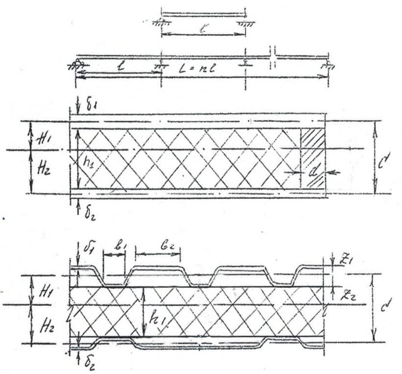
𝑙 - расчетный пролет конструкции, м; 𝑛 - число пролетов конструкции;
𝐿 = 𝑛 ∙ 𝑙 - расчетная длина конструкции (расстояние между крайними опорами),
𝐵 - ширина конструкции, м; δ1,2 - толщина листов облицовок, м;
𝐶 - расчетная высота сечения конструкции (расстояние между геометрическими осями облицовок), м; 𝑏 - ширина полки профиля облицовок, м;
𝑍1,2 - расстояния от геометрической оси облицовки до крайнего слоя облицовки,
𝐹 ̅ 1,2 - площади сечения облицовок на единицу ширины, м² /м ;
𝐼 ̅
1,2
- моменты инерции облицовок на единицу ширины, м 4 /м ;
𝐹 р - площадь сечения продольного ребра, м² ; 𝑑 - толщина продольного ребра, м; bk - ширина клеевого шва с месте соединения облицовки и продольного ребра, м; м; м; l 1 - расстояние между точечными соединениями облицовки и продольного ребра, м;
𝐼 - момент инерции сечения конструкции (на единицу ширины), м 4 /м ;
𝐼 р - момент инерции ребра (на единицу ширины), м 4 /м ;
𝐻1,2 -расстояния от нейтральной оси сечения конструкции до геометрических осей облицовок, м;
𝑊1,2 -моменты сопротивления сечения конструкции (на единицу ширины), м³ /м ;
𝑍1,2 - расстояния от геометрических осей профилированных облицовок до крайних фибр сечения облицовок, м. b1 ширина узкой полки облицовки из профилированного настила, м; b2 ширина широкой полки облицовки из профилированного настила, м.
5.2.1.2 Расчетные характеристики материалов:
𝐸 ̅ 1,2 - модули упругости материала облицовок, Па;
𝐸л - модуль упругости материала профилированного листа в конструкции, Па;
𝐸𝑛 - модуль упругости пенопластового утеплителя, Па;
𝐸р - модуль упругости материала ребра конструкции, Па; μ ̅ - коэффициент Пуассона материала облицовок;
𝐸 ̅ пр = 𝐸 ̅ 1-𝜇 2 - приведенный модуль упругости материала облицовок, Па;
𝐺р - модуль сдвига материала продольного ребра, Па;
𝐺 - модуль сдвига утеплителя, Па;
̅ α - коэффициент линейного температурного расширения материала облицовок, 1/град; α - коэффициент линейного температурного расширения материала продольных ребер, 1/град;
𝑅 ̅ - расчетное сопротивление материала облицовок при растяжении и сжатии, Па;
𝑅р - расчетное сопротивление материала ребра при растяжении и сжатии, Па;
𝑅ср - расчетное сопротивление клеевого соединения на сдвиг, Па;
𝑅 - расчетное сопротивление утеплителя при растяжении и сжатии, Па.
5.2.1.3 Характеристики жесткости конструкции:
𝐷 ̅ 1,2 - цилиндрические жесткости облицовок, Н · м;
𝐷 - цилиндрическая жесткость конструкции, Н · м; 𝑓 - прогиб конструкции, м;
5.2.1.4 Нагрузки: 𝑞 - равномерно распределенная расчетная нагрузка, Па; 𝑞н - равномерно распределенная нормативная нагрузка, Па;
𝑁 - равномерно распределенная продольная нагрузка на конструкцию (на единицу ширины), Н/м.
5.2.1.5 Усилия, деформации и температуры:
𝑅𝑎,𝑏,𝑐,𝑑 - опорные реакции (на единицу ширины конструкции), Н/м;
𝑄 - поперечная сила (на единицу ширины конструкции), Н/м;
𝑄𝑎,𝑏,𝑐,𝑑 - поперечные силы над опорами конструкции (на единицу ширины конструкции), Н/м;
𝑀 - изгибающий момент в конструкции (на единицу ширины), Н · м/м;
𝑀𝑏,𝑐, - изгибающие моменты над опорами конструкции (на единицу ширины конструкции), Н · м/м;
М1,2,3 - изгибающие моменты в однопролетной, двухпролетной и трехпролетной конструкции (на единицу ширины), Н · м/м;
𝑀 ̅ 1,2 - изгибающие моменты в облицовке (на единицу ширины), Н · м/м;
𝑀 𝑡,ω - изгибающий момент в конструкции от изменения температуры и влажности (на единицу ширины конструкции), Н · м/м;
𝑁 𝑡,ω - нормальная сила в конструкции от изменения температуры и влажности (на единицу ширины конструкции), Н/м;
𝑆р - нормальное усилие в соединении ребра с облицовкой (на единицу длины ребра в направлении, перпендикулярном срединной поверхности), Н/м;
𝑇 - сдвигающее усилие в ребрах и соединениях ребер с облицовками (на единицу длины ребра), Н/м;
∆ 1,2 -𝑡,ω - относительная деформация материала облицовок 1, 2 при изменении температуры или влажности облицовки; 𝑡̅ - температура облицовки, ℃ ; 𝑡 0 ̅ - начальная температура облицовки, ℃ ; 𝑡 н - температура наружной поверхности конструкции, ℃ ; 𝑡 в - температура внутренней поверхности конструкции, ℃ ;
5.2.1.6 Внутренние усилия и напряжения: σ ̅ 1,2 - нормальное напряжение в облицовках, Па; τ ̅ - касательное напряжение в облицовке, Па; σр - нормальное напряжение в ребре, Па; τк - касательные напряжения в клеевом соединении ребра с облицовкой конструкции, Па; τр - касательные напряжения в ребре, Па; τ - касательные напряжения в материале среднего слоя, Па; τоп - касательные напряжения в опорном сечении, Па; 𝛔 𝒛 - нормальные напряжения в утеплителе в направлении, перпендикулярном срединной поверхности конструкции, Па.
5.2.2 Характеристика изгибной жесткости и моменты сопротивления конструкций
5.2.2.1 Изгибные жесткости облицовок каркасных конструкций определяется по формуле
- 5.2.2.2 Изгибная жесткость каркасных конструкций определяется по формулам:
- при одинаковых по материалу, толщине и профилю облицовках
- при различных облицовках (изгибная жесткость, приведенная к материалу облицовки 1)
- 5.2.2.3 Моменты сопротивления сечения каркасных конструкций определяются по формуле
5.2.3 Определение усилий (напряжений) и прогибов от равномерно распределенной поперечной нагрузки и температурного перепада
Усилия, возникающие в каркасных конструкциях от температурного перепада, приведены на рисунке 5.2.
Рисунок 5.2 - Усилия в изгибаемой ограждающей однопролетной ( а ), двухпролетной ( б ), трехпролетной ( в ) конструкции
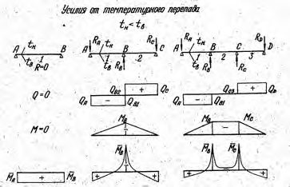
- 5.2.3.1 Опорные реакции однопролетных каркасных конструкций определяются по формуле
- 5.2.3.2 Поперечная сила (максимальная) для однопролетных каркасных конструкций определяется по формуле
- 5.2.3.3 Изгибающие моменты в однопролетных каркасных конструкциях (максимальные) определяются по формуле
- 5.2.3.4 Сдвигающие напряжения в ребрах каркасных конструкций определяются по формуле
- 5.2.3.5 Сдвигающие напряжения в клеевых соединениях ребер с облицовками каркасных конструкций определяются по формуле
- 5.2.3.6 Сдвигающие усилия в точечных металлических соединениях ребер с облицовками каркасных конструкций определяются по формуле
- 5.2.3.7 Нормальные напряжения (максимальные) в облицовках каркасных конструкций с обрамляющими ребрами определяются по формуле
где 𝐾1 - определяется по формуле (5.13).
- 5.2.3.8 Максимальные прогибы каркасных конструкций от равномерно распределенной поперечной нагрузки определяются для однопролетных каркасных конструкций с обрамляющими ребрами по формулам:
;
𝐾1, 𝐾 2 и 𝐾 3 соответственно равны:
ϑ1 - коэффициент, определяемый по графику на рисунке 5.3.
Рисунок 5.3 - Значения коэффициента ϑ1
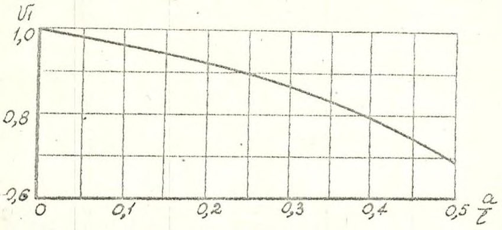
- 5.2.4.1 Усилия в однопролетных каркасных конструкциях от равномерно распределенной поперечной нагрузки и внецентренной или центральной продольной нагрузки определяются:
- опорные реакции - по формуле (5.5), поперечная сила (максимальная) - по формуле
- изгибающий момент (максимальный) - по формуле
где 𝑓 определяется по формуле (5.23).
- 5.2.4.2 Сдвигающие напряжения в ребрах и его соединениях с облицовками для каркасных конструкций определяются по формулам (5.8)-(5.10).
- 5.2.4.3 Нормальные напряжения (максимальные) в каркасных конструкциях с обрамляющими ребрами определяются по формулам:
- для облицовок
𝐾1 принимается в соответствии с (5.14);
- для ребер
- 5.2.4.4 Максимальные прогибы однопролетных каркасных конструкций от равномерно распределенной поперечной нагрузки и внецентренно приложенной продольной нагрузки определяются:
- для каркасных конструкций с обрамляющими ребрами по формуле
где N н - нормативное значение сжимающей нагрузки (на единицу ширины конструкции), Н/м.
5.2.5 Определение усилий и прогибов каркасных конструкций от изменения температур и влажности (рисунок 5.2)
- 5.2.5.1 Усилия (максимальные) в однопролетных каркасных конструкциях с обрамляющими ребрами определяются по формулам:
- изгибающие моменты:
- продольные силы:
где γ1,2 - коэффициенты, определяемые по графикам (рисунок 5.4);
𝑆1,2 - статические моменты облицовок относительно нейтральной оси сечения каркасной конструкции.
Положение нейтральной оси каркасной конструкции (расстояние от нейтральной оси до наиболее удаленной точки обшивки) определяется по формуле
Рисунок 5.4 - График для определения коэффициентов 𝛄𝟏,𝟐
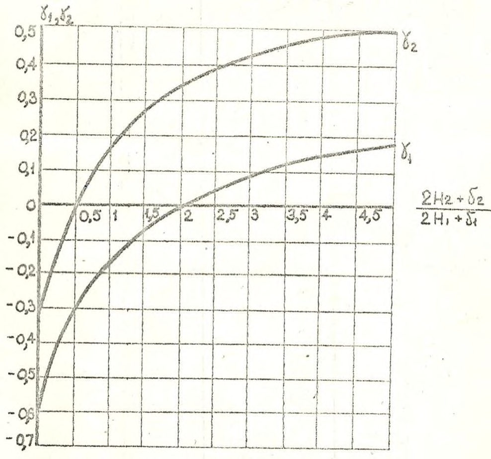
- 5.2.5.2 Нормальные напряжения (максимальные) в облицовках однопролетных каркасных конструкций с обрамляющими ребрами определяются по формуле
- для конструкций с плоскими облицовками
где
𝐹
- 5.2.5.3 Нормальные напряжения (максимальные) в обрамляющих ребрах однопролетных каркасных конструкций со стороны облицовок (5.1) и (5.2) определяются по формуле
- 5.2.5.4 Сдвигающие напряжения (максимальные) в обрамляющих ребрах однопролетных каркасных конструкций определяются по формуле
- 5.2.5.5 Сдвигающие напряжения (максимальные) в клеевых соединениях обрамляющих ребер с облицовками однопролетных каркасных конструкций определяются по формуле
- 5.2.5.6 Сдвигающие усилия (максимальные) в точечных металлических и клееметаллических соединениях обрамляющих ребер с облицовками в однопролетных каркасных конструкциях определяются по формуле
𝑇
- 5.2.5.7 Максимальные прогибы каркасных конструкций от температурновлажностных воздействий для однопролетных каркасных конструкций с обрамляющими ребрами определяются по формуле
5.2.6 Проверка прочности (устойчивости) и жесткости каркасных ограждающих конструкций
- 5.2.6.1 Прочность и жесткость каркасных конструкций следует проверять по максимальным значениям напряжений и прогибов, соответствующим невыгоднейшему сочетанию нагрузок и температурно-влажностным воздействиям.
- 5.2.6.2 Прочность утеплителя каркасных конструкций, применяемых в качестве элементов покрытий, при действии кратковременной местной нагрузки, возникающей при движении по покрытию или при складировании грузов на покрытии, дополнительно проверяется по формуле
где 𝑃 𝑚 - интенсивность местной нагрузки, кг/см² .
5.2.6.3 Прочность обрамляющих ребер каркасных конструкций проверяется со стороны облицовок 1, 2 по формулам:
- 5.2.6.4 Прочность обрамляющих ребер каркасных конструкций с облицовками из материалов, подверженных короблению при неравномерном набухании (усушке), дополнительно проверяется по формуле
𝐾𝑃1,2 - кривизна коробления облицовок вследствие набухания (усушки), 1/см.
- 5.2.6.5 Прочность соединений обрамляющих ребер с облицовками в каркасных конструкциях для клеевых соединений проверяется по формуле
- 5.2.6.6 Прочность точечных клееметаллических и металлических (заклепочных, винтовых, точечных сварных) соединений ребер с облицовками 𝑇 проверяется по формуле где σp 𝑧 определяется по формуле
где 𝑁ср - расчетное усилие на одну силовую точку при срезе (смятии).
- 5.2.6.7 Клееметаллические соединения хризотилцементных листов, стеклопластика и древесных листовых материалов на эпоксидных, фенольных и полиэфирных клеях проверяются на прочность как клеевые.
- 5.2.6.8 Прочность облицовок каркасных конструкций проверяется для растянутых облицовок (растянутых полок профиля) по условию
- 5.2.6.9 Прочность (устойчивость) облицовок каркасных конструкций проверяется для сжатых облицовок (сжатых полок профиля) по условию
- 5.2.6.10 Прочность обрамляющих ребер каркасных конструкций определяется по формулам:
- в растянутой зоне
- в сжатой зоне
- 5.2.6.11 Предельное напряжение плоской сжатой облицовки каркасных конструкций определяется:
- а) исходя из прочности утеплителя по формуле
- где ω - стрела местной начальной погиби облицовки, м.
При этом должно быть выполнено условие:
- б) исходя из устойчивости облицовки по формулам:
- для металлических облицовок
где φкр - коэффициент, принимаемый по графику φ кр(𝑚,𝑅 ̅ c √𝐸 2 ( 𝑖 δ ) 2 3 ) на рисунке 5.5;
- для облицовок из прочих материалов
где 𝑚 - относительный эксцентриситет 𝑚 = δ
Рисунок 5.5 - График для определения 𝛗кр
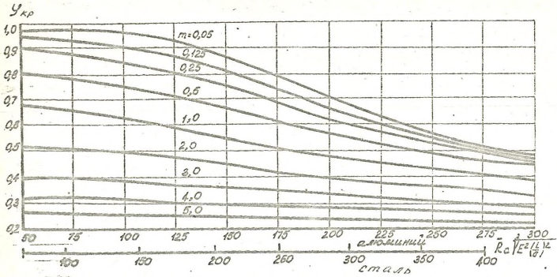
- 5.2.6.12 Предельное напряжение гофрированной сжатой облицовки волнистого, синусоидального и пильчатого профиля определяются по 5.2.6.11, причем за величину δ принимается толщина приведенной плоской облицовки, эквивалентной по I и F .
- 5.2.6.13 Предельное напряжение гофрированной сжатой облицовки трапециевидного и ребристого профилей определяется:
- а) исходя из прочности пенопласта по формуле
где φ - определяется по графикам φ (h0, γ) , соответствующим принятым материалам облицовки и среднего слоя (рисунок 5.6); h0 = hг /δ ; hг - высота гофра; γ - коэффициент заполнения профиля гофра, равный 𝐹 н /𝐹 пл ;
- 𝐹 н , 𝐹 пл - площадь наклонных и плоских соответственно участков профиля на длине, равной шагу профиля;
- б) исходя из устойчивости облицовки по формуле
где φ кр - коэффициент, принимаемый по графику φкр(𝑚, σт / σк ) на рисунке 5.7; 𝑚 - относительный эксцентриситет, равный 𝑚 = ω 𝐹 𝑊 ;
F , W - площадь и момент сопротивления профиля σк = 1,65 𝐹 √𝐸 ̅ 𝐸 2 𝐼𝑏 г 2 3 ; 𝑏г - шаг профиля.
Расчетная величина предельного (критического) напряжения сжатой облицовки принимается как меньшее из значений, определенных по формулам (5.53) и (5.54).
Рисунок 5.6 - График для определения 𝛗
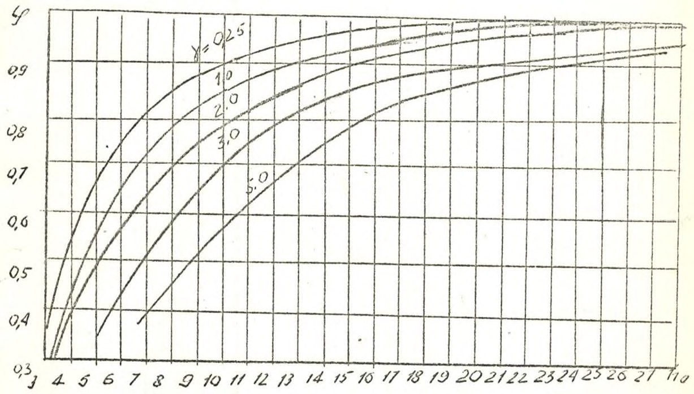
Рисунок 5.7 - График для определения 𝛗кр
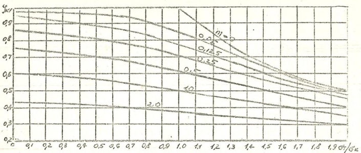
- 5.2.6.14 Критическое напряжение потери местной устойчивости плоских участков сжатой профилированной облицовки каркасных конструкций определяется по формуле
где b = b1 или b = b2; φ - коэффициент, применяемый по графику на рисунке 5.8 в зависимости от параметров 𝑏 δ √𝐸 𝐸 ̅ / 3 , при этом для стальных облицовок σ ̅кр следует принимать не более R ; для алюминиевых облицовок при σкр = 0,7 𝑅 следует вводить поправочный коэффициент, учитывающий отклонение диаграммы «напряжениедеформация» материала облицовок от закона Гука (в соответствии с указаниями соответствующего раздела СП 128.13330).
Рисунок 5.8 - График для определения 𝛗
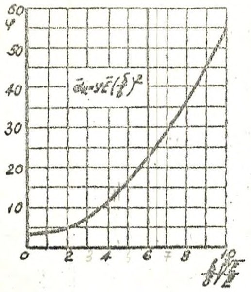
5.2.6.15 Критическая сила потери общей устойчивости от центрально приложенной продольной нагрузки определяется для каркасных конструкций с обрамляющими ребрами по формуле
5.2.6.16 Жесткость каркасных конструкций проверяется из условия, чтобы их максимальный прогиб, соответствующий невыгоднейшему сочетанию нормативных нагрузок и температурно-влажностных воздействий, не превышал нормируемой предельной величины:
где [ 𝑓 𝑙 ] - нормируемый предельный относительный прогиб.
5.3Расчет двухслойных ограждающих конструкций
5.3.1 Обозначения для двухслойной ограждающей конструкции
5.3.1.1 Геометрические характеристики конструкции (рисунок 5.9): а - продольный разрез; б - элемент поперечного сечения
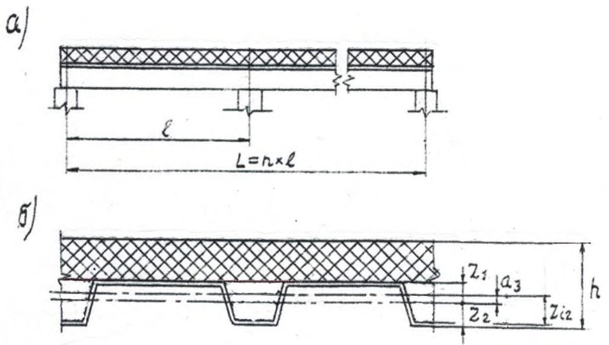
где
Рисунок 5.9 - Схема двухслойной ограждающей конструкции
l - расчетный пролет ограждающей конструкции, м; h - высота конструкции, м;
- z 1 - расстояние от нейтральной оси облицовки до крайнего внутреннего волокна полки профиля облицовки, м;
- z 2 - расстояние от нейтральной оси облицовки до крайнего наружного волокна полки профиля облицовки, м;
- zi 2 -расстояние от нейтральной оси двухслойной конструкции до крайнего наружного волокна утеплителя на полке профиля облицовки, м;
- 𝑎2 -расстояние между нейтральными осями двухслойной ограждающей конструкции и нейтральной осью утеплителя, м;
- 𝑎3 -расстояние между нейтральными осями двухслойной ограждающей конструкции и нейтральной осью облицовки, м;
𝐴̅ - площадь сечения профиля облицовки на единицу ширины, м² /м;
А𝑖 -площадь сечения утеплителя на единицу ширины, м² /м;
𝐼 ̅ -момент инерции профиля облицовки на единицу ширины, м 4 /м;
𝐼 𝑖 - момент инерции утеплителя на единицу ширины, м 4 /м; f - прогиб ограждающей конструкции, м.
5.3.1.2 Расчетные характеристики материалов:
𝐸 ̅ - модуль упругости материала облицовок, Па;
Еi - модуль упругости материала утеплителя, Па;
𝑅 ̅ - расчетное сопротивление материала облицовок растяжению-сжатию, Па;
𝑅𝑖 - расчетное сопротивление материала утеплителя растяжению-сжатию, Па.
5.3.1.3 Характеристики жесткости двухслойной ограждающей конструкции
Изгибная жесткость облицовки двухслойной ограждающей конструкции определяется по формуле
Изгибная жесткость двухслойной ограждающей конструкции с несущей профилированной облицовкой определяется по формуле
конструкции до наиболее удаленной внешней точки облицовки.
Моменты сопротивления сечения конструкции определяются по формулам:
- с внешней стороны металлической облицовки
- со стороны листа, примыкающего к утеплителю,
5.3.1.4 Нагрузки и воздействия: q - равномерно распределенная нагрузка, Па; q н - нормативная равномерно распределенная нагрузка, Па.
5.3.1.5 Усилия и прогибы от равномерно распределенной нагрузки
Обозначения усилий для двухслойной ограждающей конструкции от равномерно распределенной нагрузки приведены на рисунке 5.2.
𝑅𝐴 - опорная реакция крайней левой опоры (на единицу ширины ограждающей конструкции), Н/м;
𝑅𝐵 - опорная реакция промежуточной опоры двухпролетной и трехпролетной ограждающей конструкции (на единицу ширины ограждающей конструкции), Н/м;
𝑄 - поперечная сила (на единицу ширины ограждающей конструкции), Н/м;
𝑄𝐴 - перерезывающая сила над крайней опорой, Н/м;
𝑄𝐵1 - отрицательная перерезывающая сила над промежуточной опорой (на единицу ширины ограждающей конструкции), Н/м;
𝑄𝐵2 - положительная перерезывающая сила над промежуточной опорой (на единицу ширины ограждающей конструкции), Н/м;
М - изгибающий момент в ограждающей конструкции (на единицу ширины ограждающей конструкции), Н∙м/м;
М 1 - максимальный изгибающий момент в пролете ограждающей конструкции (на единицу ширины ограждающей конструкции), Н∙м/м;
МB - максимальный изгибающий момент над промежуточной опорой ограждающей конструкции (на единицу ширины ограждающей конструкции), Н∙м/м; 𝑓 - максимальный прогиб ограждающей конструкции, м.
Примечание - В расчетных формулах записаны усилия и прогибы только для левой половины длины ограждающей конструкции (по рисунку 5.2) ввиду симметрии статической схемы ограждающей конструкции и распределения нагрузок (температур) по ее длине.
5.3.2 Определение усилий и прогибов двухслойной ограждающей конструкции от равномерно распределенной нагрузки
- 5.3.2.1 Опорная реакция определяется по формулам:
- для однопролетной двухслойной ограждающей конструкции
𝑅𝐴
= 𝑅𝐵 = 0,5 𝑞𝑙
;
- для двухпролетной ограждающей конструкции
- для трехпролетной ограждающей конструкции
5.3.2.2 Поперечные силы (максимальные) для двухслойных ограждающих конструкций определяются по формулам:
- для однопролетной ограждающей конструкции
- для двухпролетной ограждающей конструкции
(5.61)
- для трехпролетной ограждающей конструкции
- 5.3.2.3 Изгибающие моменты в двухслойных ограждающих конструкциях (максимальные) определяются по формулам:
- для однопролетной ограждающей конструкции
- для двухпролетной ограждающей конструкции
- для трехпролетной ограждающей конструкции
- 5.3.2.4 Нормальные напряжения (максимальные) σ1,2 ̅ ̅ ̅ ̅ ̅ в облицовках двухслойных ограждающих конструкциях определяются по формулам:
- в крайних точках сечения несущей облицовки ограждающей конструкции
- в крайнем, наиболее удаленном от нейтральной оси слое утеплителя нормальное напряжение
- 5.3.2.5 Максимальные прогибы двухслойных ограждающих конструкций от равномерно распределенной поперечной нагрузки определяются по формулам:
- для однопролетной ограждающей конструкции
- для двухпролетной ограждающей конструкции
- для трехпролетной ограждающей конструкции
Максимальные прогибы слоистых ограждающих конструкций не должны превышать значений предельных прогибов, приведенных в СП 20.13330.
- 5.3.2.6 Прочность профилированной несущей облицовки двухслойной ограждающей конструкции проверяется для растянутой облицовки (растянутых полок профиля) по формуле
- 5.3.2.7 Прочность (устойчивость) профилированной несущей облицовки двухслойной ограждающей конструкции проверяется для сжатых полок профиля по формуле
Критическое напряжение для сжатых полок несущей облицовки σкр ̅̅̅̅ определяется по 5.2.6.14.
5.3.2.8 Прочность утеплителя двухслойной ограждающей конструкции проверяется по формуле
6Проектирование ограждающих конструкций с эффективным утеплителем и тонколистовыми облицовками и конструктивные решения
(8,7 %) для покрытия с поперечными стыками. Для ограждающих конструкций с облицовками из рулонных полимерных материалов уклон должен составлять от 1,5 % до 10 %.
АПриложение А. Схема определения нормативных и расчетных значений параметров эффективных утеплителей
А.1 Используя среднее значение параметров утеплителя, его стандартное отклонение и изменчивость по результатам приемо-сдаточных испытаний утеплителей, нормативные и расчетные значения параметров определяют в соответствии с таблицей А.1.
Таблица А.1 Схема для определения нормативных и расчетных значений параметров утеплителя
| Среднее значение параметра | 𝑚 ̅ 𝑅 = Σ𝑚 𝑅𝑖 ⁄𝑛 |
|---|---|
| Стандартное отклонение параметра | σ 𝑅 = √ ∑(𝑚 𝑅𝑖 -𝑚 ̅ 𝑅 ) 2 (𝑛 -1) |
| Изменчивость параметра | 𝑐 𝑅 = σ 𝑅 𝑚 ̅ 𝑅 ⁄ |
| Обеспеченность параметра для нормативных значений | 𝑃 𝑅 = 0,95 |
| Требуемый уровень индекса надежности | 𝑒𝑟𝑓β = 2,8 ÷5,2 |
| Коэффициент веса | α 𝑅 = σ 𝑅 √σ 𝑅 2 +σ 𝑆 2 ⁄ |
| Обратная функция распределения стандартизированной нормальной величины | Ф -1 = Ф -1 (𝑃 𝑅 ) |
| Нормативное значение параметра при обеспеченности 𝑃 𝑅 | 𝑚 𝑅 н =𝑚 ̅ 𝑅 -σ 𝑅 Ф -1 (𝑃 𝑅 ) |
| Коэффициент надежности по материалу | γ 𝑚 н = 𝑚 𝑅 н /[𝑚 ̅ 𝑅 -α 𝑅 σ 𝑅 𝑒𝑟𝑓β] |
| Расчетное значение параметра | 𝑅 p н = 𝑚 𝑅 н /γ 𝑚 н |
А.2 Частные коэффициенты надежности вводят в соответствии с ГОСТ 27751.
А.3 Значение требуемого уровня индекса надежности 𝑒𝑟𝑓β определяют по формуле
где R - значение несущей способности, прочности;
S - значение воздействий (нагрузки);
𝐷𝑅 - значение дисперсии несущей способности, прочности;
𝐷𝑆 - значение дисперсии воздействий (нагрузки).
А.4 Схема определения нормативных и расчетных значений параметров утеплителя по алгоритму, указанному в таблице А.1, на примере прочности при сжатии минераловатных плит при обеспеченности 0,98 и требуемом уровне индекса надежности от 3,0 до 5,2 приведена в таблице А.2.
Таблица А.2 Схема определения нормативных и расчетных значений параметров утеплителя на примере прочности при сжатии минераловатных плит из каменной ваты при обеспеченности 0,98 и требуемом уровне индекса надежности от 3,0 до 5,2
| Характеристика | Значение | Значение | Значение | Значение | Значение | Значение |
|---|---|---|---|---|---|---|
| 1 Среднее значение 𝑚 ̅ 𝑅 , кПа | 102 | 102 | 102 | 102 | 102 | 102 |
| 2 Стандартное отклонение R | 20,83 | 20,83 | 20,83 | 20,83 | 20,83 | 20,83 |
| 3 Изменчивость c R | 0,2042 | 0,2042 | 0,2042 | 0,2042 | 0,2042 | 0,2042 |
| 4 Обеспеченность P R | 0,98 | 0,98 | 0,98 | 0,98 | 0,98 | 0,98 |
| 5 Требуемый уровень индекса надежности erf | 5,2 | 4,8 | 4,4 | 4 | 3,5 | 3 |
| 6 Коэффициент веса R | 0,8 | 0,8 | 0,8 | 0,8 | 0,8 | 0,8 |
| 7 Обратная функция распределения стандартизированной нормальной величины Ф -1 | 2,0537 | 2,0537 | 2,0537 | 2,0537 | 2,0537 | 2,0537 |
| 8 Нормативное значение параметра при обеспеченности P R , m R н | 59,22 | 59,22 | 59,22 | 59,22 | 59,22 | 59,22 |
| 9 Коэффициент надежности по материалу, восстанавливаемой по нормальному закону R н | 3,8587 | 2,6903 | 2,3065 | 1,6755 | 1,3559 | 1,1387 |
| 10 Расчетное значение параметра, восстанавливаемого по нормальному закону R p н | 15,347 | 22,013 | 28,678 | 35,344 | 43,676 | 52,008 |
БПриложение Б. Конструктивные решения
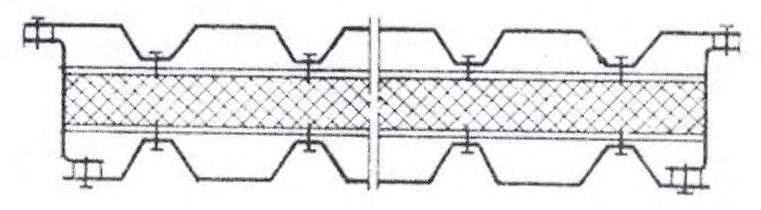
Рисунок Б.1 - Пример конструктивного решения каркасной ограждающей конструкции
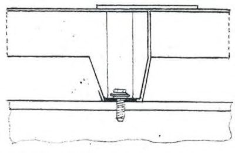
а - продольный стык; б , в - поперечный стык
Рисунок Б.2 - Крепление двухслойных ограждающих конструкций к каркасу здания
Библиография
- [1] Федеральный закон от 30 декабря 2009 г. № 384-ФЗ «Технический регламент о безопасности зданий и сооружений»
- [2] Федеральный закон от 27 декабря 2002 г. № 184-ФЗ «Технический регламент о техническом регулировании»
- [3] Федеральный закон от 22 июля 2008 г. № 123-ФЗ «Технический регламент о требованиях пожарной безопасности»